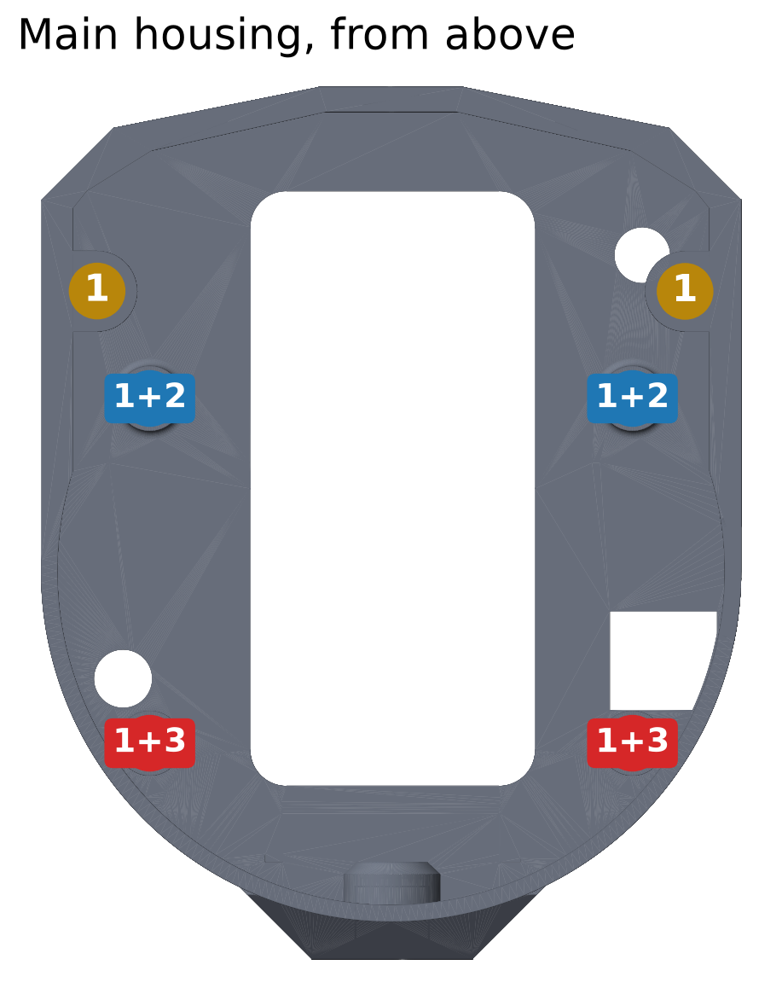
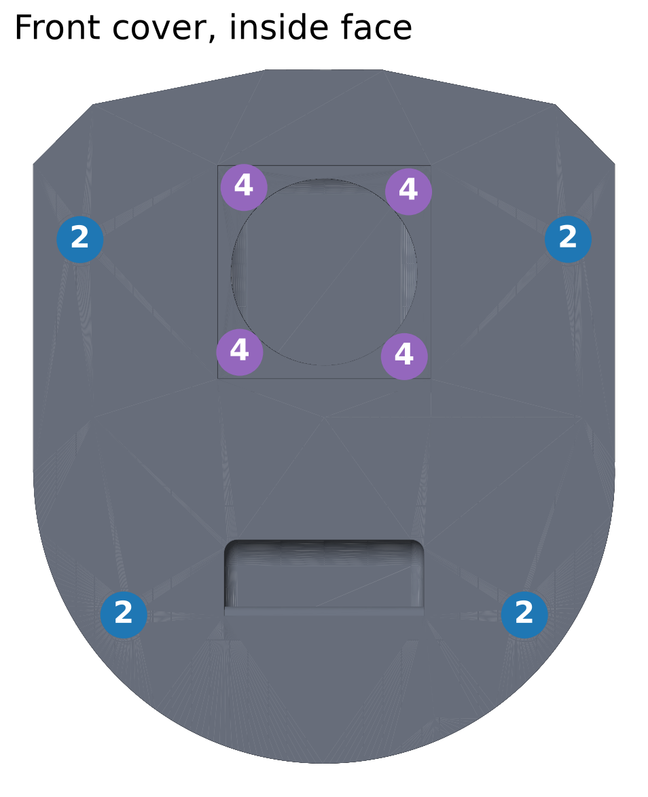
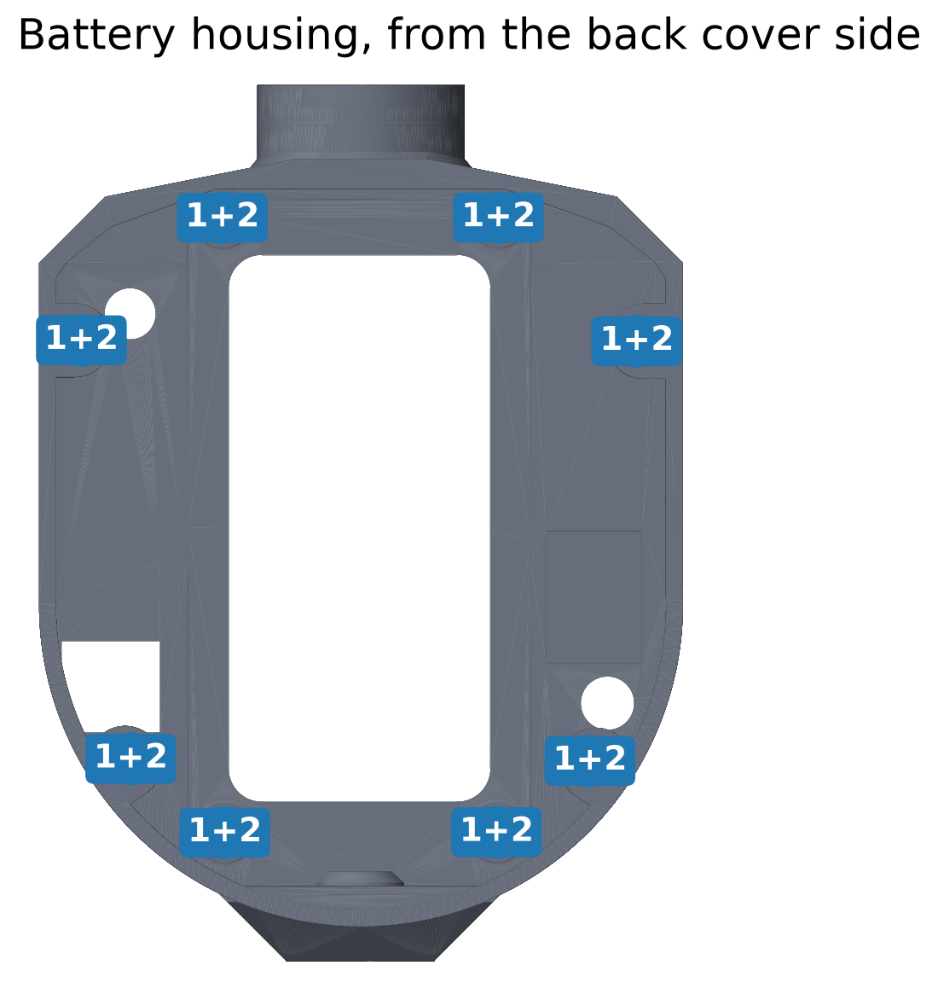

FASTENER MAP
Each number is one kind of part. The drawings show every place it goes. A hole marked 1+2 takes an insert (1) first, then a screw (2). Melt in all the inserts before you fit anything else (step 7.1).
The top of each drawing is the side with the antenna connectors. This map fits cases printed on or after 21 November 2026. A front cover whose four fan marks are shallow dimples, not through holes, is an older print. See BOM note 10 for its hardware.
| # | Part | Qty | Where it goes |
|---|---|---|---|
| 1 | M3×3 mm short heat-set insert | 14 | Main housing: 4 PCB posts and 2 wall posts. Battery housing: 4 UPS posts and 4 back cover posts. |
| 2 | M3×6 mm screw | 14 | 2 through the PCB, 4 through the front cover, 4 through the UPS board, 4 through the back cover. |
| 3 | M3×15 mm brass standoff | 2 | Through the PCB into the lower two PCB posts. The front cover screws into its top. |
| 4 | M3×12 mm screw (M3×14 mm for a 10 mm fan) | 4 | Through the fan into the front cover. No insert. |
| 1/4"-20 tripod insert | 1 | Tripod mount on the base. Not shown below. |


